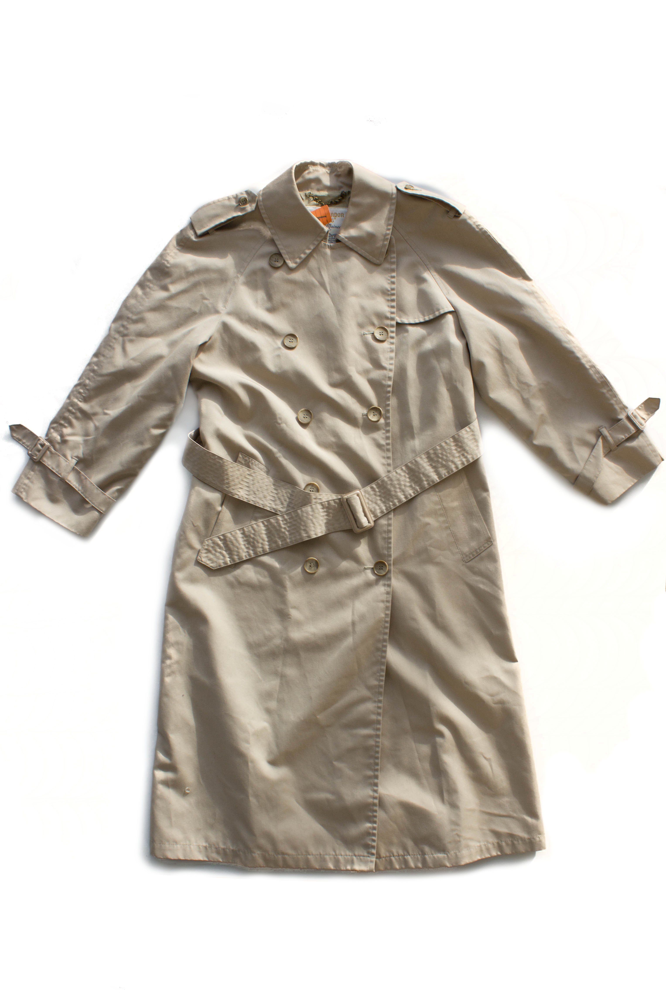

“Oi! Did you hear?”
I cocked my ear toward the sound of the door opening. “Hear what?”
“They’re closing down the factory.”
The news didn’t surprise me. The workers, the company, the public - everyone had been saying it would for a long time now. One by one the other factories had closed, until the only one left was the one here, in Baltimore.
“I suppose time would have to run out eventually. But I didn’t think it would happen like this.” Her words were sour and angry, and her shoulders slumped in defeat. I knew that she felt she was somehow to blame, though no worker could have prevented it. I remember how the president had told us workers that we were the ones that would determine the success of the factory’s last-ditch efforts were to be successful.
She walked over to the coat closet and pulled out my nice coat, a beautiful trench coat made in the very same factory we worked in. It was years old, but I loved it just the same as when I had gathered the money to buy it. Draping it over her arm, she began fiddling with the buttons.
“The buttons we use haven’t changed at all, huh? You think you were the one to put these on?”
I took it from her hands. “I wouldn’t be surprised, God knows how many of these I’ve sewn on in my lifetime.” Turning my attention toward it, I lifted the coat up and fingered at the stitched label. “London Fog - Weather wear of distinction,” I mumbled to myself, “Made in U.S.A.”
“Tomorrow they’re going to tell the world we’re shutting down in about two months. The company president himself came and told us so. Couldn’t compete with business overseas.”
I scowled at that thought. Of course our factory couldn’t compete with the mere cents an hour a worker cost overseas. Was I really so naïve as to believe we could keep the factory up and running? It seemed things might work out for a while, when the company had put $2 million into the factory to keep it going. Those in charge had hoped that our Baltimore factory could serve a purpose, turning out and distributing coats quicker than it could be done from overseas. I suppose that hope wasn’t enough.
I looked back up to her. “You think the buttons will be different there? I suppose they wouldn’t be.”
“Nah. I figure they’ll sew them on just the same, no matter what country they’re in.” She laughed bitterly. “Things are changing, but it’s not with the buttons.”